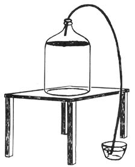

NOTE: The Justice Department of the Federal Government long ago announced that it would pursue a hands-off policy on any beer made for home consumption and not for sale. In recent years, however, the Alcohol and Tobacco Tax Division of the Treasury Department has informally attempted to enforce commercial laws on home brewers and, thereby, discourage another time honored, down home, do-it-yourself activity.
Lawyers say the Feds argument would never hold up in court. Nevertheless, we do not encourage anyone to brew any beer until he is thoroughly satisfied that such activities are completely within the law and that he has complied with all applicable federal, state and local regulations.
The first time I encountered home brew, I was eight years old and didn't know what it was. I found a crock of evil smelling, scummy brown liquid that was bubbling furiously and attracting clouds of flies. The flies, by the way, were regularly drowning in the froth. At the time, it seemed inconceivable that my father and uncle were bottling and drinking this awful looking stuff. In later years, however, I learned that my uncle would guzzle anything from bay rum to vanilla extract.
After a while, I screwed up my courage and asked to try the home brew. My uncle said no. From that point on, the operation was kept a secret since this was during prohibition and the family brewers were afraid I might accidently rat out to a cop.
Later I found a bar that made a good grade of home brew and, once in a while to celebrate, I put away a few pitchers. I didn't think too much about do-it-yourself beer while in the Air Force (the store-bought variety was both plentiful and cheap) but once I was discharged and had settled down to the sordid business of earning a living, I became disgusted with the high price of beer and began picking the brains of all living relatives in a desperate attempt to find the formula for making my own. Finally, I gathered enough information to start.
I bought a bottle capper, caps, some thin flexible hose (about the same as on an old fashioned douche bag) and a five gallon jug. I purchased my malt extract, sugar and yeast and began with a mixture that would make the strongest beer possible. After the proper incantations, I set the jug in the bedroom with the rubber hose running to a pan of water.
This was a scientific improvement. No flies were going to get in my brew. Also, as the gas from the fermented malt rose to the top of the jug it was sent through the rubber hose to the pan of water where it bubbled furiously.
The amount of bubbles from the hose told me when to bottle. This is important: If you bottle too soon, your beer will blow up the bottles. If you bottle too late, the beer may never have a head when you pour it.
For the first few days, the great experiment fermented rapidly. It was pleasant to go to bed at night and listen to the brew bubbling away in the pan of water. Then the activity began to slow. At last (about four days) the fermentation dropped to about three bubbles per minute.
I stole the baby's bottle brush, scrubbed 48 twelve ounce bottles, moved the jug into the kitchen and put it on the counter. As I began bottling, I also began sampling.
By the time I was ready to clean the jug and start a new batch, I was not as clear headed as I should have been. The residue from the old batch did not want to come out of the jug so I added a new batch to the old yeast and malt in the bottom of the jug. I later met a dentist who had been doing this for years and had created his own strain of yeast bacteria which he felt accounted for the excellent taste of his beer.
The freshly-capped bottles should age for seven days but, like all rules, you can break this one, too. You'll have a beer with hardly any head by drinking it early.
I tried out my brew on some friends. I didn't get any bad remarks but, then again, I didn't get any good ones either. The beer was dark, heavy and bitter. It had a whallop that was astounding. A couple of quarts and you were set for the evening.
I began to experiment and found that the amount of malt extract regulated the color and taste while the sugar controlled the whallop. After a while, I began to brew beer that was light, in color, pleasant to taste and held a head well after pouring. Then one night . . . disaster!
I had had a few too many and I had forgotten to mark the calendar when I mixed the batch. My bubble system had been loaned to a friend who was making his first try at brewing and, to keep out the bugs, I had put a ball on the neck of the jug. To make a long story short, I bottled too soon, put the beer in the utility room and went to bed. During the night, the explosions began.
After the third muffled blast, I decided to investigate. A stream of beer trickled from under the door of the utility room and, as I stood there, another bottle blew. I went back to bed and tried to forget the whole thing.
After a day of thinking, I donned a long pair of gloves and a welders mask and armed myself with a can opener. I took each bottle, opened it and put the beer in a jug to continue working. I was lucky and got away with disarming the whole batch. Now that I know better, I wouldn't advise anyone else to try such a stunt.
The strength of the explosions amazed me. Some bottles had exploded in the case and the top half of the bottle was driven up through the bottom of a styrofoam cooler that had been placed on top of them. Later I viewed a kitchen where one hardy individual had capped a five gallon water jug, allowing no escape for the fermenting gas. There was glass and homebrew everywhere, including the ceiling.
As my friends began making beer, the age of experiments began. One added ginger; a second, cracked corn; one man threw in raisins and still another included a bag of corn meal. The results were potent. Of course they no longer had beer but a high octaine mixture similar to mead. Some of these formulas laid out respectable beer drinkers like they were schoolboys and had to be treated with respect. If you ignored the rule, you slept where you fell.
During the summer and hot months, the brew works off rather rapidly. Four to six days and it's ready to bottle, but in the winter, the action takes twice as long. One rule never to ignore is: Count the bubbles. The fermentation time will vary with temperature but the bubbles will tell when the brew has reached the correct specific gravity to bottle. I went to the expense ($10.00) of buying a specific gravity hydrometer to exactly determine the bottling time but I found the bubble system just as accurate and more uniform. (To use the hydrometer correctly, you need a temperature correction chart for the temperature of the liquid in the jug.)
At approximately that time, I got curious about the law and called the beverage commission to ask about my operation. The commissioner told me it was illegal. I thought he had made a mistake and continued my inquiries. I was soon convinced that the beverage commissioner was right. That gentleman did point out, though, that in order to convict me, they would need a search warrant to gether evidence that would hold up in court. He also pointed out that if I was drinking my output and not selling it, I was safe from arrest.
The basic mixture I've found best is built around one three pound can of Blue Ribbon Malt Extract. This sells in A & P and other supermarkets for $1.25. The cans I buy are labeled Light. I had never seen one labeled Dark. I am not sure what Dark would be like, since Light is about the color and consistency of chocolate syrup. Use whatever you can obtain
T his malt extract is added to five gallons of water. I tried distilled water and demineralized water, but I couldn't detect any difference between that beer and batches made with plain tap water. I even used water from a well a few times and the beer still came out exactly the same.
For the sugar, any granulated brand will do. Five pounds, or approximately one pound for a gallon of water. The yeast is dry Fleischmann's and is obtained in packets of 1/4 ounce. Five cents for a packet.
I had a chemist run an alcohol-content test on a sample of this brew. It came out an even 10% as opposed to the 3.23.9% of most commercial beer.
A bottle capper will cost about $7.00. If you can't find one at your local hardware store, go to the Sears Roebuck order catalog. The bottle capper will also be handy when putting up root beer for the kids and your wife can use it to can and preserve chili sauce made from fresh garden vegetables, so you'll get a good return on this investment. A hundred caps should cost about 40 cents.
On bottling day, throw the required number of caps into a pan of water and soak them. Most caps for home use are lined with cork and produce a much better seal if they are soaked.
On the day you start your first batch of beer, put the contents of one package of yeast in a cup. Add warm water. Not hot. Warm water. If you can't hold your finger in it, it's too hot. Add one spoon of sugar and stir the yeast, water and sugar together. After a short while, it will began to foam. It's important that you start the yeast before you add it to the mixture.
Put about two gallons of water on the stove and heat almost to the point of boiling. Dissolve your malt into this hot water. Add the sugar and dissolve it.
When the malt and sugar are dissolved, pour the mixture into a five gallon jug. Add about a gallon of cold water. Shake gently, add your yeast mixture and fill the jug almost to the top with more cold water. Leave about six inches of room for the froth and bubbles at the top of the jug as the mixture begins to work.
The best brew vat is one of those five gallon jugs on which there is a two dollar deposit. If you buy a crock it is yours and you never get your money back. If you don't break the jug and you someday find yourself dead broke, you can always return it temporarily and get the two dollars. I know.
Find a metal cap that will fit the jug and insert a small peice of tubing through a hole in the cap. Make sure the cap and tubing is air tight. I soldered mine. If you use modeling clay for a seal, make sure it is absolutely gas tight.
From this cap, run a rubber hose to the pan of water and you will have bug-free beer that tells you (three bubbles per minute) when to bottle. Pick a hose at least five or six feet long and you can use it later to siphon beer from the jug into the bottles for capping. Keep in mind that the siphon only works when the bottle you are filling is a couple of feet lower than the jug from which you are siphoning.
Put a quarter of a teaspoon of sugar into each bottle before you cap it. This will help assure a creamy head that will hold and properly carbonate your beer. Store the bottled brew in a cool dark place for around seven days and then start drinking. The five gallon jug will yield two cases of beer at a cost to you of about three cents a battle after you amortize the cost of the capper.
Since taste is an individual thing, try some experiments. During the summer I make a mixture of one half can of malt, three pounds of sugar and a packet of yeast to five gallons of water. In the winter, for a more robust brew, I double everything except the water. Keep a record of when you mix each batch and how much malt, sugar and yeast you put in. I now make a slip and drop it in the case as I bottle so I can duplicate the mix if I like.
I have used both throw away bottles and deposit bottles. The deposit bottles are a little more rugged but either one will blow up it you bottle too early, so be careful!
|
 CLARK HINKLE |
|
|